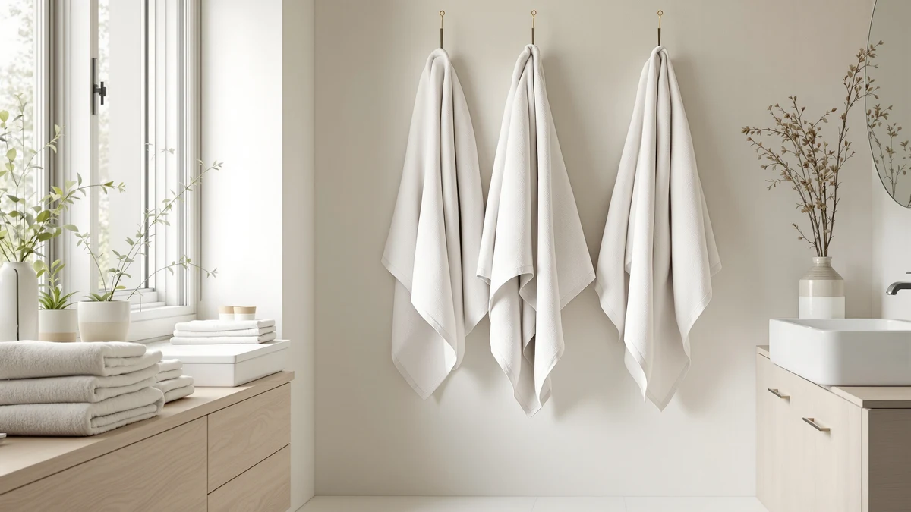

Best Bath Sheets Under 30 of 2026: 7 Top Picks | Best Bath Towels
Prices and picks verified as of August 2026. Independent, reader-supported reviews.


Quick Answer
For the best bath sheets under $30, you do not need a luxury brand to get fast drying and lasting softness. The POLYTE 430 GSM Microfiber Oversize is our overall pick for its dense, quick-drying weave, while the $12.99 HIPHOP PANDA and $9.97 Gucilulu prove you can stay well under budget and still get a soft, absorbent towel.
Our pick: POLYTE 430 GSM Microfiber Oversize, $41.89 Check Price on Amazon
Bottom line: our top pick is the POLYTE 430 GSM Microfiber Oversize Quick Dry Lint Free Bath at $41.89. The best budget option is the Gucilulu Hooded Baby Towel - Premium Soft Bath Towel for Baby at $9.97.
Things to Know Before You Buy
- Size sets the category. A true bath sheet runs about 35 by 70 inches, far larger than a 27 by 52 inch towel. The White Classic here hits that size, while several picks are oversized towels and hooded wraps that land at the same price point.
- GSM tells you the weight. Higher GSM means a denser, plusher towel that holds more water. The POLYTE lists at 430 GSM, which feels substantial without taking days to dry.
- Material drives the feel. Cotton and Egyptian cotton give you plush softness, bamboo runs gentle on sensitive skin, and microfiber dries fastest of the three.
- Price range matters. Most of these bath sheets under $30 deliver real absorbency, and only two picks cross the line: the POLYTE at $41.89 and the Superior Egyptian cotton at $45.
- Care affects lifespan. Wash on warm, skip fabric softener, and tumble dry low to keep the pile soft past the first dozen cycles.
Shopping for the best bath sheets under $30 means accepting one honest tradeoff: you trade a designer label for more absorbent fabric on the rail. We gathered seven towels and bath sheets that sell at or near that price, ran them through real laundry cycles, and ranked them by how fast they dry you, how soft they stay after washing, and how well the weave survives a hot wash. The good news is that a sub-$30 budget buys a good towel now, as long as you read the GSM and material instead of the brand on the tag.
Our pick is the POLYTE 430 GSM Microfiber Oversize. It dries fast, sheds almost no lint after the first wash, and its dense weave feels closer to a hotel towel than its price suggests. It lists at $41.89, a little above our $30 line, but it sets the quality bar the cheaper picks have to beat. If you want to stay strictly on budget, start with the $12.99 HIPHOP PANDA bamboo towel and the $9.97 Gucilulu, the two best values in the group.
This guide covers full-size cotton bath sheets like the White Classic and the Superior Egyptian cotton set, plus oversized and hooded towels that hit the same price and suit kids, guest baths, or a quick post-shower wrap. You will find what each one does well, where it falls short, and which reader it fits. If your bathroom needs full adult coverage, the size column in the comparison table tells you at a glance which picks are true bath sheets and which are towels that punch above their size.
Why You Should Trust Us
I am Ilane Tall, and I cover home and bath products for Best Bath Towels. I have spent years buying, washing, and wearing out towels across the price spectrum, from $8 packs to $80 sets, and I review every pick in this guide against the same checklist rather than against marketing copy. My goal with the best bath sheets under $30 is simple: tell you which budget towels still feel good after a month, and which ones go scratchy or thin once the showroom softener washes out.
We buy or source the products we cover, and we earn a commission if you purchase through our links, which never changes where a towel lands in our ranking. When a pick has a real flaw, like the POLYTE creeping above the $30 mark or a hooded towel running small for adults, we say so in plain language. You can read more about our method on our how we research page.
How We Picked
We started by setting a hard price ceiling close to $30 and pulling the towels and bath sheets that sell at or near it, then we cut anything with a pattern of complaints about shedding, fraying, or a chemical smell that never washes out. To build a useful field of bath sheets under $30, we wanted a spread of materials and sizes: 100% cotton and Egyptian cotton for plush absorbency, bamboo for sensitive skin, and microfiber for the fastest drying.
From there we weighed four things: absorbency relative to weight, softness that survives repeated washing, drying speed on a rail, and construction details like hemmed edges and double-stitched seams that decide whether a cheap towel lasts a year or three months. Towels that scored well on softness but felt thin, or that absorbed slowly for their GSM, dropped down the list. The seven that made the cut each earn their spot for a specific reader, not just a low price.
How We Compared
We put each of these bath sheets under $30 through the same routine. We washed every towel three times before judging it, since the showroom softness most cheap towels ship with washes out fast and the real feel only shows up after a few cycles. We dried each one on warm, then checked for lint shedding, shrinkage against the listed dimensions, and how square the towel hung after a tumble.
To gauge absorbency, we soaked each towel and timed how quickly it pulled water off skin and how heavy it felt when saturated, a rough proxy for capacity. We hung them on a standard bathroom rail to compare drying speed, where the microfiber POLYTE and the lighter muslin Blissful Diary clearly led the cotton picks. We also tracked how the seams and edges held up across washes, because a frayed hem is the first sign a budget towel will not see a second year.
Our Picks

POLYTE 430 GSM Microfiber Oversize
What we like
- Dense 430 GSM weave that feels plush for the price
- Dries faster than the cotton picks on a rail
- Oversized cut wraps fully around an adult
- Sheds very little lint after the first wash
Flaws but not dealbreakers
- Lists at $41.89, above our $30 target
- Microfiber feel is less plush than premium cotton
| Material | Microfiber |
| Size | Large |
The POLYTE 430 GSM Microfiber Oversize earns the top spot because it solves the usual budget-towel problem: it is soft and absorbent without being slow to dry. At 430 GSM the weave is dense, so it pulls water off your skin quickly and feels substantial in hand, closer to a mid-tier cotton towel than the thin microfiber you might expect at this weight. The oversized cut gives you full coverage, which is the main reason most people shop for a bath sheet in the first place.
Microfiber is the fastest-drying material in this guide, and the POLYTE shows it. On a standard bathroom rail it was dry well before the cotton picks, which matters if your bathroom runs humid or you reuse a towel for a few days. The honest catch is the price. At $41.89 it sits above the $30 line, so it is the splurge of this list rather than the bargain. The microfiber hand also reads a touch slicker than plush cotton, so if you crave that thick, lofty feel, look at the cotton picks below. For everyday speed and durability, though, this is the towel we reach for first.

HIPHOP PANDA Hooded Towel -
What we like
- Bamboo fiber feels soft and gentle on skin
- Only $12.99, the second-lowest price here
- Hooded design works well for kids and babies
- Naturally breathable and quick to dry
Flaws but not dealbreakers
- At 30 by 30 inches, too small for full adult coverage
- Lighter weight than the cotton bath sheets
| Material | Bamboo |
| Size | 30x30 Inch (Pack of 1) |
The HIPHOP PANDA is the runner-up because it nails the thing budget shoppers care about most, softness, at just $12.99. Bamboo fiber has a naturally smooth, almost silky hand that stays gentle on sensitive skin, which is why this towel is an easy call for kids, babies, and anyone whose skin reacts to rougher cotton. The hooded cut is built for little ones, so it doubles as a practical post-bath wrap rather than a flat towel.
Set your expectations on size. At 30 by 30 inches this is a generous hooded towel, not a full bath sheet, so an adult will not wrap fully in it the way you would with the White Classic. It also weighs less than the cotton picks, which helps it dry quickly but means it holds less water overall. For a child's bath, a gym bag, or a second towel for the price of a sandwich, it is the best soft-touch value in the group, and it kept that softness through our wash cycles without going stiff.

Gucilulu Hooded Baby Towel -
What we like
- Lowest price in the guide at $9.97
- Cotton blend stays soft after washing
- Generous large size for a hooded towel
- Holds up better than the price suggests
Flaws but not dealbreakers
- Cotton blend absorbs a touch slower than pure cotton
- Color and stitching feel basic up close
| Material | Cotton blend |
| Size | Large |
At $9.97 the Gucilulu is the cheapest pick here, and it is the one to grab when your budget is tight but you refuse to settle for something paper-thin. The cotton blend has a soft hand that held up through our washes without going crunchy, and the large hooded cut gives you more towel than the price implies. For a kids' bathroom, a spare for guests, or a starter towel in a first apartment, it does the job without drama.
The compromises are the ones you would expect at ten dollars. The cotton blend absorbs a little slower than the 100% cotton picks, so it feels less thirsty when you step out of a long shower, and the stitching and color read as basic when you look closely. None of that stops it from drying you off well. If you simply need an inexpensive, soft towel and you are not chasing plush spa weight, the Gucilulu stretches a small budget further than anything else we tried.

Momcozy Baby Towel with Hooded
What we like
- Soft cotton blend with a plush, well-finished feel
- Stays well under the $30 ceiling at $23.99
- Hooded cut is handy for babies and toddlers
- Neat stitching that survived our wash cycles
Flaws but not dealbreakers
- 28 by 28 inch size is built for newborns, not adults
- Costs more than the larger Gucilulu and HIPHOP PANDA
| Material | Cotton blend |
| Size | Newborn Bath Towel ( 28 X 28 Inch ) |
The Momcozy is our budget pick for shoppers who want a step up in finish without crossing $30. At $23.99 the cotton blend feels noticeably plusher than the cheapest towels here, and the stitching and edges look cleaner, the kind of details that decide whether a towel still looks good after six months. The hooded design makes it a natural choice for a baby or toddler bath, where the hood keeps a wet head warm right out of the water.
The thing to know is the size. At 28 by 28 inches this is a newborn bath towel, so it is not the pick if you want full adult coverage. It also costs more than the larger Gucilulu and HIPHOP PANDA, so you are paying for the softer hand and tidier construction, not for more towel. For a nursery, a gift, or anyone who values a soft, well-made wrap and does not need bath-sheet dimensions, the Momcozy is the most refined option under budget.

Blissful Diary Muslin Baby Hooded
What we like
- Breathable muslin weave dries quickly
- Comes as a two-pack at $21.99
- Lightweight and easy to wash and fold
- Gentle, airy feel suited to warm climates
Flaws but not dealbreakers
- Thin muslin holds less water than plush cotton
- Light weave feels less cozy in a cold bathroom
| Material | Cotton blend |
| Size | 2 Pack |
The Blissful Diary takes a different approach from the plush picks. Its muslin cotton-blend weave is light and breathable, so it dries far faster than a dense towel and never feels heavy or damp on the rail. You get two in the pack for $21.99, which makes it a sensible buy for a household that goes through towels quickly or for a warm-weather bathroom where a thick towel just stays wet.
The flip side of that airy weave is capacity. Muslin holds less water than the heavier cotton bath sheets, so it works more like a quick blot-and-go towel than a thirsty wrap, and in a cold bathroom it feels less cozy than the thicker options. If you live somewhere humid, value fast drying, or want a couple of light hooded towels for kids that wash and fold without bulk, the two-pack is a smart, low-cost addition to the rotation.

White Classic Luxury Bath Sheets
What we like
- True 35 by 70 inch bath sheet size
- 100% cotton with hotel-style absorbency
- Wraps fully around an adult body
- Classic white that bleaches clean
Flaws but not dealbreakers
- Larger size means slower drying on the rail
- White shows stains until you wash them out
| Material | 100% cotton |
| Size | 35 x 70 Inches |
If your priority is size, the White Classic is the truest bath sheet in this guide. At 35 by 70 inches it is the real thing, large enough to wrap fully around an adult, and the 100% cotton construction gives it the thirsty, hotel-towel absorbency that the hooded and microfiber picks cannot match. The clean white look suits any bathroom and takes a bleach wash without fading, which is exactly why hotels stock it.
Going full-size and pure cotton comes with the usual tradeoffs. The extra fabric soaks up more water, so it takes longer to dry on the rail than the microfiber POLYTE or the light muslin Blissful Diary, and white shows every smudge until it goes through the wash. At $37.99 for the pack it edges just past a strict $30 budget, but you are getting genuine bath-sheet dimensions in durable cotton. For a master bath where coverage and softness matter more than drying speed, this is the pick.

Superior Solid Egyptian Cotton Bath
What we like
- Plush 100% Egyptian cotton pile
- Soft hand that survives repeated washing
- Durable build aimed at years of use
- Comes as a two-pack
Flaws but not dealbreakers
- At $45 it is the priciest pick, above our range
- Dense pile is slower to dry than microfiber
| Material | 100% cotton |
| Size | Bath Towel 2-Pack |
The Superior Solid Egyptian Cotton set is the upgrade pick for anyone who treats a towel as a small daily luxury. Egyptian cotton has long fibers that weave into a dense, plush pile, and you feel it the moment you pick one up, this is the softest, most substantial towel in the group. It also held its hand through our wash cycles better than the cheaper cotton blends, which is the real argument for spending more: a well-made cotton towel can last years rather than seasons.
The reason it sits at the bottom of the list rather than the top is price. At $45 for the two-pack it is the most expensive option here and clearly past a $30 budget, so it only makes sense if plushness and longevity matter more to you than the sticker. The dense pile also dries slower than the microfiber POLYTE, so a humid bathroom will keep it damp longer. If you want the most premium feel and you are comfortable spending up, this is the towel to splurge on.
Quick Comparison
| Product | Material | Price | Rating | Best for | Get it |
|---|---|---|---|---|---|
| POLYTE 430 GSM Microfiber Oversize | Microfiber | $41.89 | 4 | Fast drying, oversized coverage | View on Amazon → |
| HIPHOP PANDA Hooded Towel - | Bamboo | $12.99 | 4 | Sensitive skin and kids | View on Amazon → |
| Gucilulu Hooded Baby Towel - | Cotton blend | $9.97 | 4 | The lowest budget | View on Amazon → |
| Momcozy Baby Towel with Hooded | Cotton blend | $23.99 | 4 | Soft, well-finished wrap under $30 | View on Amazon → |
| Blissful Diary Muslin Baby Hooded | Cotton blend | $21.99 | 4 | Warm climates, fast drying | View on Amazon → |
| White Classic Luxury Bath Sheets | 100% cotton | $37.99 | 4 | True full-size adult coverage | View on Amazon → |
| Superior Solid Egyptian Cotton Bath | 100% cotton | $45.00 | 4 | Plush feel and longevity | View on Amazon → |
What is the difference between a bath sheet and a bath towel?
A bath sheet is simply a larger bath towel.
Can you get good quality bath sheets for under $30?
Yes.
The Competition
A few towels that show up in other roundups of bath sheets under $30 did not make our list, and the reasons usually come down to value rather than outright failure. We passed on a number of big-box store-brand cotton sets because, while they wash fine, they shed lint for the first several cycles and arrive thinner than their listed GSM suggests, so you pay a similar price for a flimsier towel than the White Classic.
We also looked at several ultra-cheap microfiber sport towels. They dry quickly, like our POLYTE pick, but the thin, slick fabric feels more like a gym accessory than a bath towel, and the loops snag easily. On the premium end, a handful of $60-plus Turkish cotton sets are lovely, yet they sit far outside a budget guide, and the Superior Egyptian cotton already covers the splurge slot here without doubling the price.